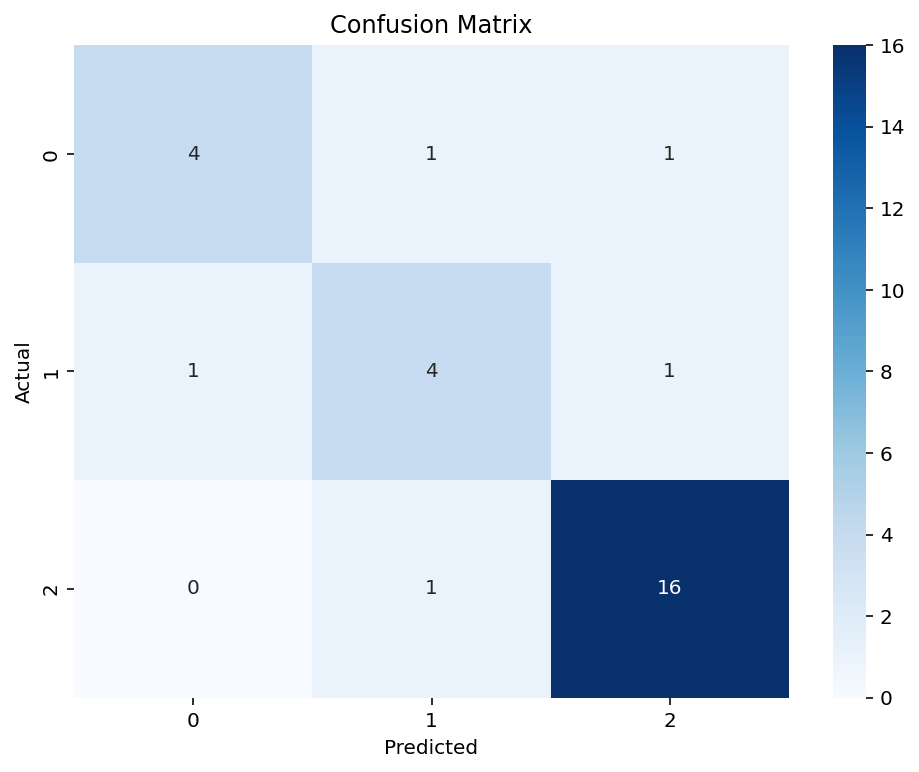
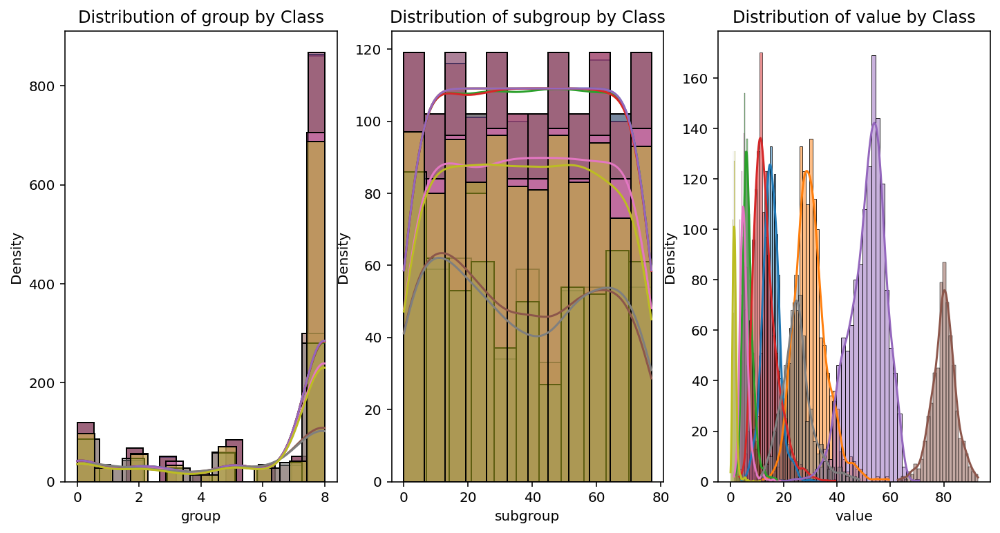
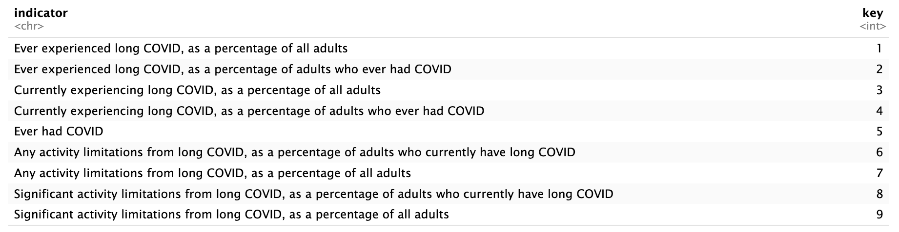

Naive Bayes is a supervised classification technique used to classify data based on a training set containing existing labels. At its core, Naive Bayes is based on Bayesian statistics, or more specifically conditional probabilities. Assuming that the features used to describe the data are conditionally independent, Naive Bayes takes the provided class labels and calculates the probability by multiplying the probabilities of each feature occurring given each class. Through this conditional statement, it then chooses the class with the highest probability based on the feature values to be the predicted value. Thus, Naive Bayes heavily relies on the features being uncorrelated as well as the training data to accurately predict the data at hand. An example of using Naive Bayes in practice is detecting spam emails from an inbox, as shown in Fig 1. Naive Bayes would be able to use existing features from the email to determine whether it was spam or not.
Naive Bayes is especially useful for uncertain, unknown, or incomplete information. It provides a way to estimate the likelihood of an event based on prior knowledge, making it well-suited for classification tasks. The objective of Naive Bayes classification is to accurately predict the class label of an input data point given its features.
Additionally, there are different types of Naive Bayes classifiers tailored for specific types of data. Gaussian Naive Bayes is suited for continuous data, assuming the features are normally distributed. Multinomial Naive Bayes is commonly used for text classification, specifically when dealing to word frequencies. Lastly, Bernoulli Naive Bayes is effective for binary features, making it useful for tasks like spam detection.
Thus, I will be using Naive Bayes (specifically Gaussian and Multinomial) in order to create classifications for both the CDC survey data as well as media coverage of long covid. Given the nature of Long Covid and its recency, Naive Bayes will be very useful in providing more insight of potentially vulnerable groups or grouping of symptoms that should be looked for in people with Long Covid.
Preparing the Data
First, we’ll need to prepare both the labeled text data and the labeled record data. This includes properly formatting and cleaning the data as well as breaking the dataset into train, validate, and testing sets.
Long Covid News
To understand the nature of long covid reporting, we will also need to take a look at the differences between long covid reporting and the reporting of other illnesses or diseases. Thus, let’s head back to the News dataset containing news articles from the web for the past month with the key works “Long Covid”, “Influeza”, and “Chickenpox”. As we can concluded in our sentiment analysis, the articles written regarding Long Covid are, in fact, more neutral in comparison to the other two infectious diseases. From this conclusion of sentiment analysis, we may infer that the Naive Bayes classifier may also be able to determine the difference between media coverage on each disease. Therefore, we will use these infectious disease labels within our Naive Bayes classifier to try to accurately predict long covid messaging within the media.
Using the text data provided from the News API, we’ll first conduct a feature selection on the data in order to determine the words/phrases that are highly correlated with the classification label. The following code goes through this feature selection.
Code
all_news = pd.read_csv("../../data/01-modified-data/news_clean.csv")news = all_news['all_text'].tolist()y = all_news['topic'].tolist()y=np.array(y)# PARAMETERS TO CONTROL SIZE OF FEATURE SPACE WITH COUNT-VECTORIZER# minDF = 0.01 means "ignore terms that appear in less than 1% of the documents". # minDF = 5 means "ignore terms that appear in less than 5 documents".# max_features=int, default=None# If not None, build a vocabulary that only consider the top max_features ordered by term frequency across the corpus.from sklearn.feature_extraction.text import CountVectorizerdef vectorize(corpus,MAX_FEATURES): vectorizer=CountVectorizer(max_features=MAX_FEATURES,stop_words="english") # RUN COUNT VECTORIZER ON OUR COURPUS Xs = vectorizer.fit_transform(corpus) X=np.array(Xs.todense())#CONVERT TO ONE-HOT VECTORS (can also be done with binary=true in CountVectorizer) maxs=np.max(X,axis=0)return (np.ceil(X/maxs),vectorizer.vocabulary_)(x,vocab0)=vectorize(news,MAX_FEATURES=10000)vocab1 =dict([(value, key) for key, value in vocab0.items()])df2=pd.DataFrame(x)s = df2.sum(axis=0)df2=df2[s.sort_values(ascending=False).index[:]]i1=0vocab2={}for i2 inlist(df2.columns):# print(i2) vocab2[i1]=vocab1[int(i2)] i1+=1df2.columns =range(df2.columns.size)x=df2.to_numpy()x
Now, we’ll take the selected features and run a Multinomial Navie Bayes model in order to classify the test and determine the accuracy.
Code
#Split to train and test dataimport randomN=x.shape[0]l = [*range(N)] # indicescut =int(0.8* N) #80% of the listrandom.shuffle(l) # randomizetrain_index = l[:cut] # first 80% of shuffled listtest_index = l[cut:] # last 20% of shuffled listfrom sklearn.naive_bayes import MultinomialNBfrom sklearn.metrics import accuracy_scoreimport timedef train_MNB_model(X,Y,i_print=False):if(i_print):print(X.shape,Y.shape)#SPLIT x_train=X[train_index] y_train=Y[train_index].flatten() x_test=X[test_index] y_test=Y[test_index].flatten()# INITIALIZE MODEL model = MultinomialNB()# TRAIN MODEL start = time.process_time() model.fit(x_train,y_train) time_train=time.process_time() - start# LABEL PREDICTIONS FOR TRAINING AND TEST SET start = time.process_time() yp_train = model.predict(x_train) yp_test = model.predict(x_test) time_eval=time.process_time() - start acc_train= accuracy_score(y_train, yp_train)*100 acc_test= accuracy_score(y_test, yp_test)*100if(i_print):print(acc_train,acc_test,time_train,time_eval)return (acc_train,acc_test,time_train,time_eval, y_test, yp_test)#TESTacc_train,acc_test,time_train,time_eval,y_test, y_pred =train_MNB_model(x,y,i_print=False)print("Training Accuracy: ", acc_train)print("Training Time: ", time_train)print("---")print("Testing Accuracy: ", acc_test)print("Testing Time: ", time_eval)
Training Accuracy: 99.10714285714286
Training Time: 0.005211000000000077
---
Testing Accuracy: 86.20689655172413
Testing Time: 0.0020970000000000155
We can see that the testing accuracy score is fairly high, but it could be better. Let’s analyze this further through some visualizations:
Code
conf_matrix = confusion_matrix(y_test, y_pred)# Plot the confusion matrix as a heatmapplt.figure(figsize=(8, 6))sns.heatmap(conf_matrix, annot=True, fmt='g', cmap='Blues')plt.xlabel('Predicted')plt.ylabel('Actual')plt.title('Confusion Matrix')plt.show()

Code
##UTILITY FUNCTION TO INITIALIZE RELEVANT ARRAYSdef initialize_arrays():global num_features,train_accuraciesglobal test_accuracies,train_time,eval_time num_features=[] train_accuracies=[] test_accuracies=[] train_time=[] eval_time=[]# INITIALIZE ARRAYSinitialize_arrays()# DEFINE SEARCH FUNCTIONdef partial_grid_search(num_runs, min_index, max_index):for i inrange(1, num_runs+1):# SUBSET FEATURES upper_index=min_index+i*int((max_index-min_index)/num_runs) xtmp=x[:,0:upper_index]#TRAIN (acc_train,acc_test,time_train,time_eval,y_test,y_pred)=train_MNB_model(xtmp,y,i_print=False)if(i%5==0):print(i,upper_index,xtmp.shape[1],acc_train,acc_test)#RECORD num_features.append(xtmp.shape[1]) train_accuracies.append(acc_train) test_accuracies.append(acc_test) train_time.append(time_train) eval_time.append(time_eval)# DENSE SEARCH (SMALL NUMBER OF FEATURES (FAST))partial_grid_search(num_runs=50, min_index=0, max_index=500)# SPARSE SEARCH (LARGE NUMBER OF FEATURES (SLOWER))partial_grid_search(num_runs=10, min_index=500, max_index=5000)#PLOT-1plt.plot(num_features,train_accuracies,'-or')plt.plot(num_features,test_accuracies,'-ob')plt.xlabel('Number of features')plt.ylabel('ACCURACY: Training (blue) and Test (red)')plt.show()# #PLOT-2plt.plot(num_features,train_time,'-or')plt.plot(num_features,eval_time,'-ob')plt.xlabel('Number of features')plt.ylabel('Runtime: training time (red) and evaluation time(blue)')plt.show()# #PLOT-3plt.plot(np.array(train_accuracies),train_time,'-or')plt.plot(np.array(test_accuracies),eval_time,'-ob')plt.xlabel('test_accuracies')plt.ylabel('Runtime: training time (red) and evaluation time (blue)')plt.show()# #PLOT-4plt.plot(num_features,np.array(train_accuracies)-np.array(test_accuracies),'-og')plt.xlabel('Number of features')plt.ylabel('train_accuracies - test_accuracies')plt.show()
From these images, we can see that the confusion matrix shows a correlation between the actual and predict topic labels for each article, with the best predictions on the media related to influenza. Additionally, the training and testing accuracy is quite different, with the training data leveling in its accuracy at approximately 87% at around 100 features, while the testing accuracy was close to 100% when ran on 500 features. Runtime is also approximately the same in pattern, however, the testing model does take a longer time than the train. Thus, while the testing accuracy is very good for this model, there could be a few reasons why the difference between train and test is so drastic. Primarily, the data set may be too small to accurately predict these topics, and therefore, the model is overfitting. In the same regard, the train and test split may not have been randomized enough to provide an accurate modeling scenario. Lastly, this could also mean that differences between media coverage on these infectious diseases is quite minimal and therefore cannot be classified by a model.
CDC Long Covid Survey
First, let’s prepare the data for Naive Bayes Classification. Please note that since our feature set is very small (n=3), we will use all the features for our classifier. If the feature set was larger, we would use sklearn’s feature selection tool in order to identify the best features to represent the data without being cross-correlated.
feature_columns = ['group', 'subgroup', 'value'] fig, axs = plt.subplots(1, 3, figsize=(12, 6))for feature, ax inzip(feature_columns, axs.ravel()):for class_label in cdc_naive['key'].unique(): # Replace 'label_column' with your actual label column name sns.histplot(cdc_naive[cdc_naive['key'] == class_label][feature], kde=True, label=f'Class {class_label}', ax = ax) ax.set_title(f'Distribution of {feature} by Class') ax.set_xlabel(feature) ax.set_ylabel('Density')plt.show()


CDC Keys
After training the classifier on our training data and running predictions of the test set, we can see that the Gaussian Naive Bayes classifier had an accuracy score of approximately 70%. Thus, given the demographic grouping, subgrouping, and estimated percentage of the survey group, we are able to predict the person’s experience with Long Covid with approximately 70% accuracy. Let’s take a closer look at the classifier though visualizations.
Here, we can see that the confusion matrix shows a strong correlation along the diagonal, meaning that the predicted classes correctly correlate to the actual classes. There are a few cases where the classifier incorrectly classified the objects, such as predicting class 0 instead of class 4 or predicting class 6 instead of class 2. Rather than the classifier itself, this may also be an issue with the ‘closeness’ of these classes.
We can also look at the class distribution within the dataset, first overall, and then by feature.
From these visualizations, we can see that class 7 and 8 are the least represented within the dataset, primarily because they represent extreme cases of inactivity or immobility due to Long Covid from patients who are currently experiencing Long Covid and those who have previously experienced symptoms. Additionally, and what is more surprising, is that the distributions for each class when viewing through group and subgroup are not nearly as distinct as when viewing classes through the value feature. Thus, we can say that the classifier heavily depended on the value feature to predict the classes.
Conclude
Thus, after creating a Gaussian and Multinomial Naive Bayes models on CDC and Long Covid media coverage data, we can conclude a few things. Primarily, the long covid media coverage collected seems to be “different” to some degree in comparison to coverage of other diseases. This may be due to journalistic style of writing; however, it may also be attributed to the smaller dataset. Additionally, for the CDC data, we were able to get fairly accurate results of classification of people with differing long covid experiences based on their demographics. With additional information on symptoms, this classifier could be incredibly useful to help individuals understand their severity of long covid in comparison to historical records.